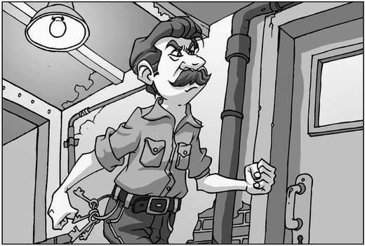

‘First the girls’ toilets, now the basement,’ muttered Lenny. ‘I’m visiting all sorts of exotic new places today.’
‘Technically it’s not a basement, it’s a cellar,’ Alexander corrected. ‘A basement would be a purposely constructed room, whereas this area will have been the storage vault, excavated from the foundations of the original school building.’
‘Do you think there’ll come a day when you get sick of the sound of your own voice?’ asked Lenny.
‘I doubt it,’ retorted Alexander.
‘Will you two stop bickering?’ hissed James as he led the way down the stairs and into the dark ahead, the faint glow of his mobile-phone screen barely lighting the way. ‘The last thing we need is Mr Wharpley on the warpath.’
‘I agree,’ added Alexander. ‘The man’s a liability. How he got the job of school caretaker with those multiple murder convictions on his record is beyond me.’
‘M-murder convictions?’ stammered Lenny.
‘Oh, yeah,’ said Alexander. ‘I saw his file in my dad’s office once. They never found two of the bodies…’
‘I have to go back up,’ muttered Lenny, swallowing hard as James turned the screen of his mobile to face him. ‘I, er…forgot to get my science homework from Mr Watts.’
Lenny had made it halfway up the staircase by the time James caught his arm. ‘He’s winding you up, you idiot!’ he said. ‘Now, let’s just turn the water supply off, and we can get out of here.’
Lenny followed James and Alexander down to the large cellar, where the boys found a light switch and flicked it on. A dirty, low-wattage bulb flared into life, relieving little of the gloom.
‘Right,’ said Alexander. ‘What now?’
James shrugged. ‘It might surprise you to know that, seeing as I’m not yet a fully qualified plumber, I’ve never switched off a water supply before.’ He scanned the network of pipes that ran along the walls. ‘I suppose there must be some sort of tap to turn, but it could take us ages to find it.’
‘We should split up,’ suggested Alexander, much to Lenny’s horror.
‘Split up?’ he muttered. ‘I don’t like the sound of that!’
‘I agree,’ said Alexander. ‘There could be anything down here,’ he teased.
James punched his arm angrily. ‘Will you pack it in about Mr Wharpley?’ he said, gesturing to Lenny as his friend grew pale. ‘If he faints, I don’t fancy lugging him back up those stairs!’
Alexander rubbed his dead arm, a stern expression on his face. ‘I’m not talking about Mr Wharpley,’ he explained. ‘In case you’re forgetting, there’s a creature with long, purple tentacles wandering about, accompanied by someone who’s short one very dead, severed hand!’
There was a brief moment of silence while all three boys let this information settle in, broken eventually by James.
‘We haven’t got time to worry about that,’ he said. ‘If we don’t get a move on we’ll be discovered. Now, let’s look for a way to turn off the water.’ He gestured to a doorway to his left. ‘Lenny, you take that room. Alexander can do in here, and I’ll search through the archway over
there. If we follow the pipes along the wall we’re bound to find something.’
As James finished speaking, he became aware of a rumbling sound that slowly grew in volume, becoming louder and louder until it seemed to envelop the cellar. Before long, it was accompanied by a banging and clanking so noisy that it forced the boys to hold their hands over their ears. Lenny looked as though he might wet himself.
‘The tentacle’s back!’ he screamed. ‘It’s coming for us!’
Alexander dashed over to the wall, and pressed his hands in turn against a series of the old, metal pipes. ‘It’s the waste supply,’ he shouted over the din. ‘Someone’s flushed a toilet above us.’ He pointed to the two unsearched rooms. ‘Follow the pipes now! Ignore any that you can feel water running through; they’re going in the wrong direction. The remaining pipes will feed water up to the school. The tap will be somewhere along one of those.’
Reluctantly, Lenny ran for the door at the far end of the cellar. Taking a deep breath, he turned the handle and pushed, praying for the door to be locked, but it swung open on aged, rusty hinges.
He found himself inside a workshop, filled to the brim with tools, broken desks and boxes of screws. This was obviously where Mr Wharpley spent most of his caretaking day. Hearing that the noise from the pipes was beginning to subside, Lenny gently touched each one in turn until he found one that lacked the vibration of the others, and began to follow it along the wall.
After a few metres, it disappeared behind a large, metal shelving unit, packed with more tools than Lenny had ever seen in one place. If Mr Wharpley’s got all these screwdrivers, he mused, how come the sports-hall noticeboard has been hanging off the wall for the past year and a half?
The pipe didn’t reappear on the other side of the shelves, so Lenny pressed his face against the cold brick wall, trying to see if it ended behind the unit with a tap. There was definitely something there, if only he could reach it.
Stretching out, Lenny managed to grab the item in his fingertips, but it wasn’t the metal water tap that he expected to touch. It was a dusty paper tube, tied in the middle with a length of old black ribbon. He slid the tube towards him, pulling it free of the unit and holding it up to the dim light to examine it.
‘Hey, lads!’ he shouted. ‘Come and see what I’ve found!’ He turned to leave the room but, as he did so, he caught one of the legs of the shelves with his foot and the rusted metal snapped completely. The unit groaned and slowly began to topple forwards. Lenny leapt out and grabbed it from the front, managing to stop it at an impossible angle, the tools sliding dangerously close to the front of their shelves. Straining against the weight, he pushed it back against the wall and cautiously removed his hands, checking to see whether the unit was safe. It was, and he let out a long sigh.
Lenny turned to leave the room, and was almost at the door when the unit collapsed completely behind him, the deafening sound of tools crashing to the stone floor echoing around the cellar.
‘Who’s down there?’ demanded a voice, accompanied by heavy footsteps hurrying down the staircase. Mr Wharpley! James dived into the main cellar with Lenny, Alexander switched off the light, and the trio just managed to duck behind the door before the furious caretaker appeared, torch in hand. He took one look at his scattered tools and sighed. ‘Flippin’ rust!’

he moaned, stooping to pick up the broken leg from the shelving unit. ‘I told Tricky Ticky I needed some new shelves!’
The caretaker dropped to his knees and began to collect his tools carefully, checking them for chips or dents before laying them gently to one side. All the while he muttered about teachers getting new equipment when they needed it—why shouldn’t he get a new shelving unit? After all, it was he who kept the place running day in, day out.
Behind him, James gestured for Alexander and Lenny to be quiet, then silently led the way out of the cellar and back up the stairs towards the welcoming daylight.